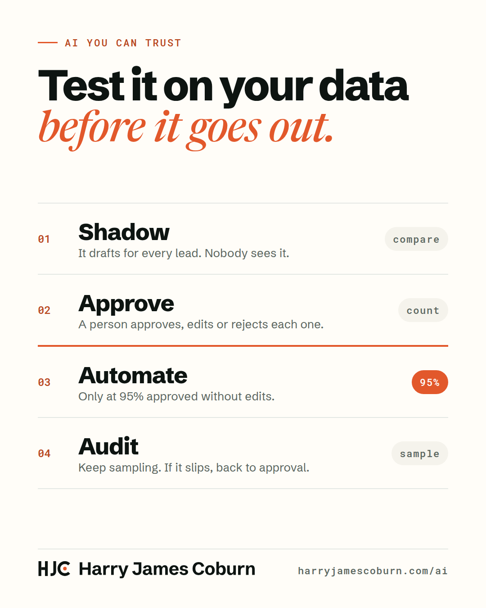

29 Oct 2026 · LinkedInJoin the conversation on LinkedIn
The 95% rule
Many sales teams are struggling to make AI work.
I think a big reason is trust. They switch the agent on, then find out what it said to their best prospects.
You already have most of what you need to fix that: your past deals, your emails, and what your best people actually sent. Test on your own data first, and get to a confidence level before anything goes out.
This is how I do it, and how I've done it;
- Shadow. The agent drafts for every lead, and nobody sees it. Compare its drafts with what your team actually sent.
- Approve. A person approves, edits or rejects every draft. Track one number: approved without edits.
- Automate. Once a segment hits 95% approved without edits, over enough volume, it can send on its own.
- Audit. Keep sampling. If quality slips, it goes back to approval.
The edits are the most valuable part. Each one becomes an example that makes the next draft better.
How are you deciding when an AI workflow is good enough to go live?
If you're building AI into your sales process and want to do it in a way you can trust, my approach is here: harryjamescoburn.com/ai